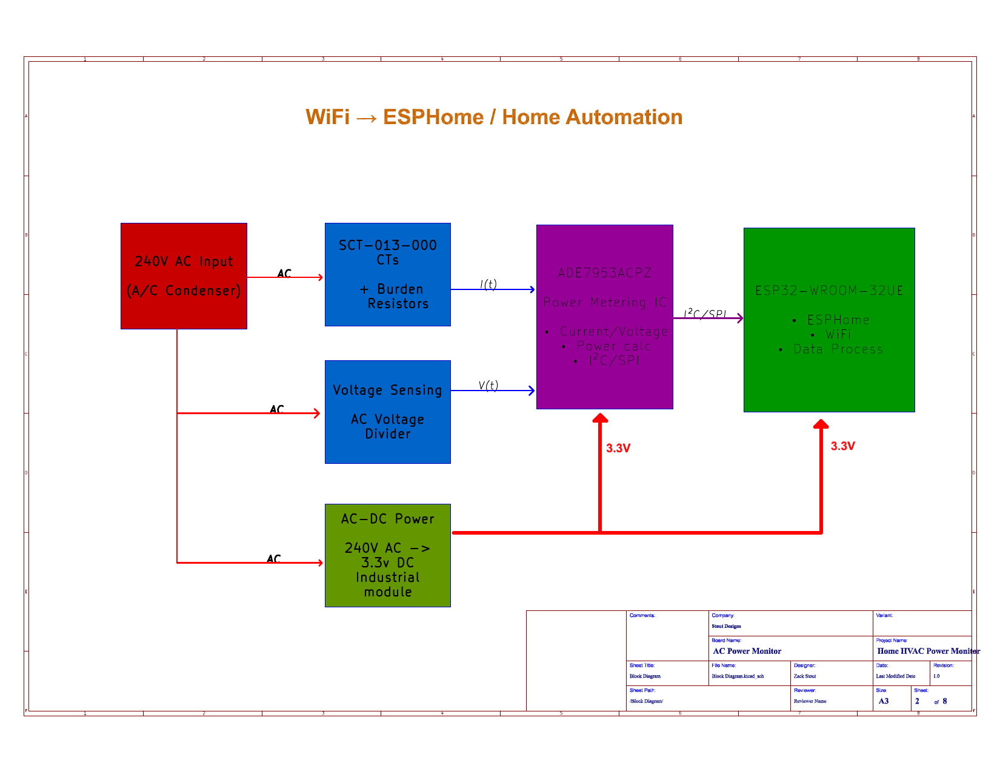
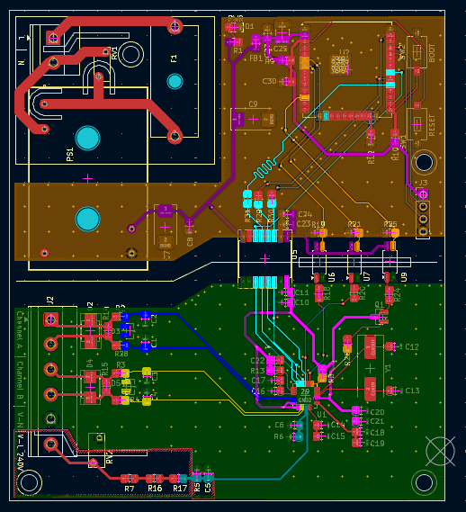
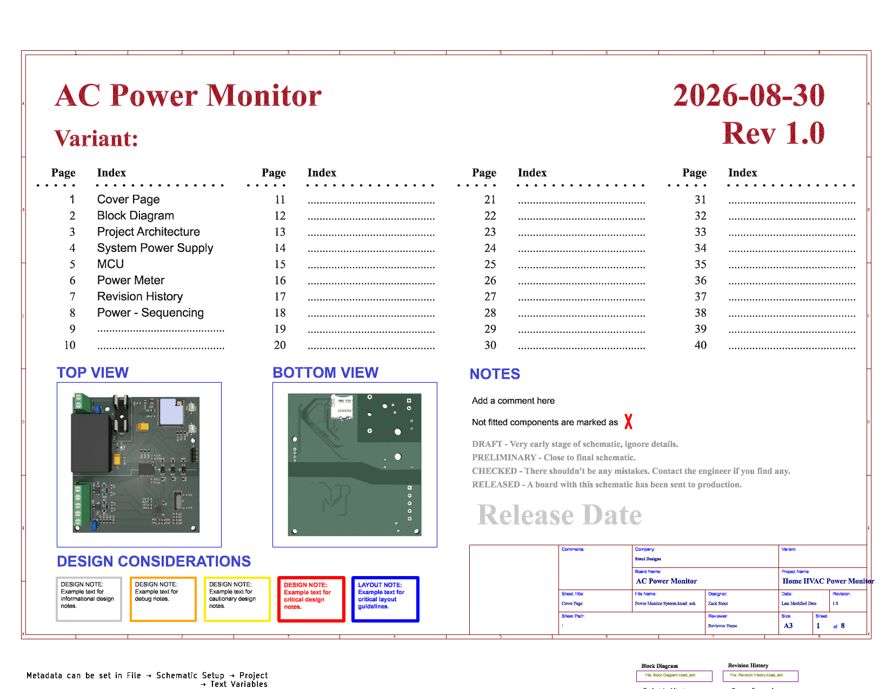
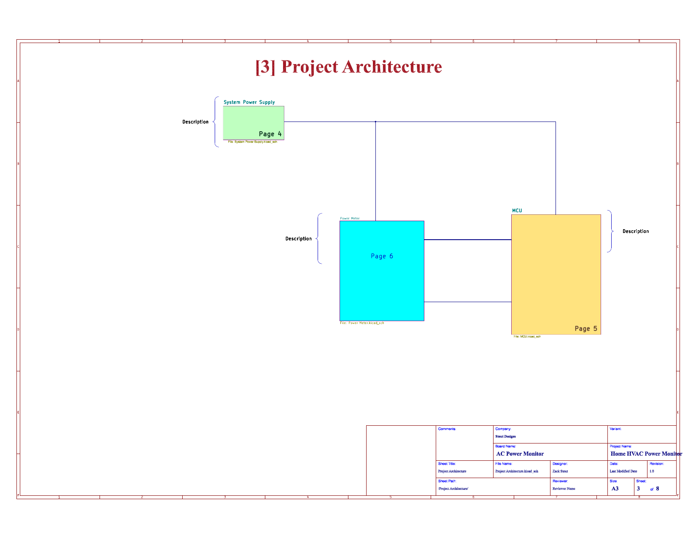
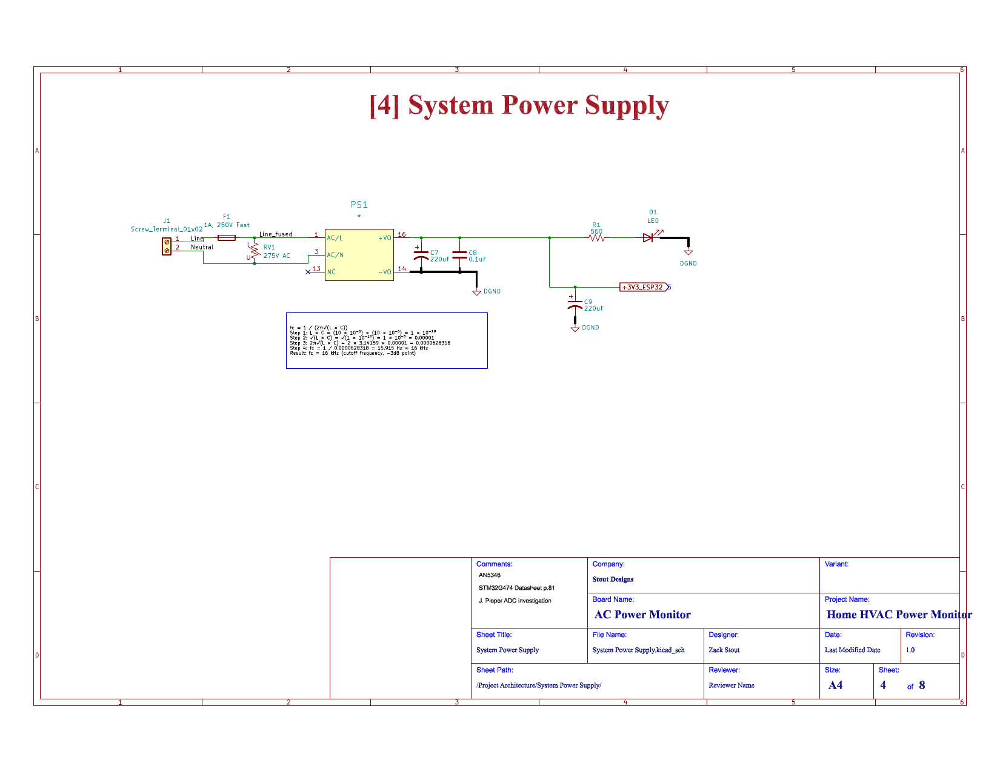
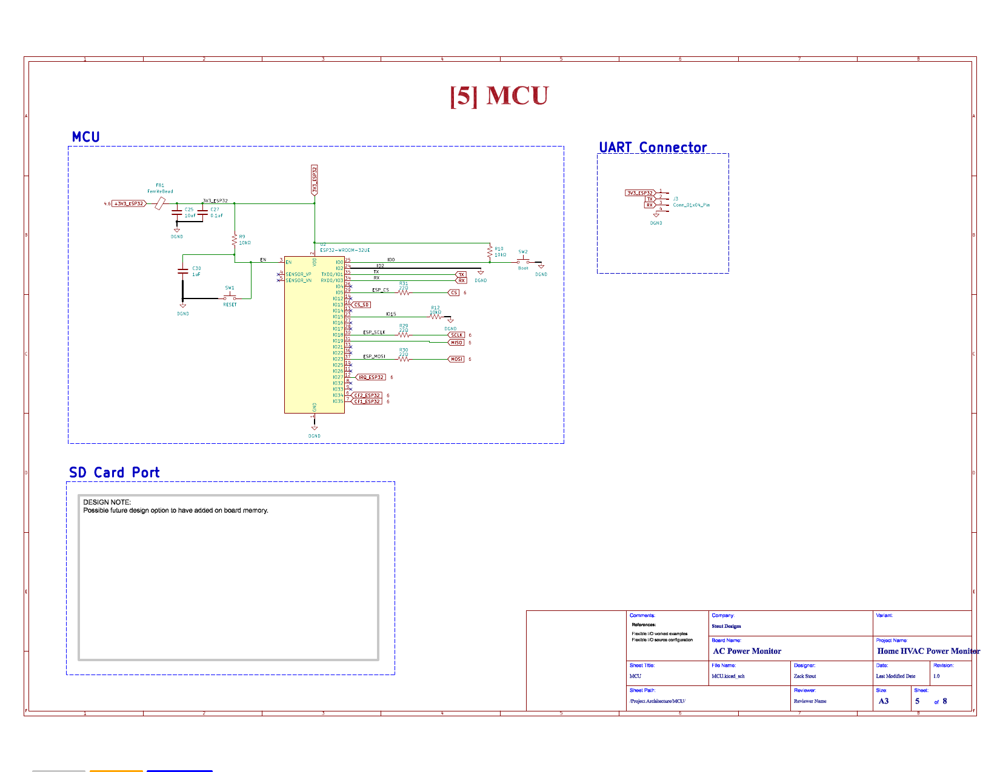
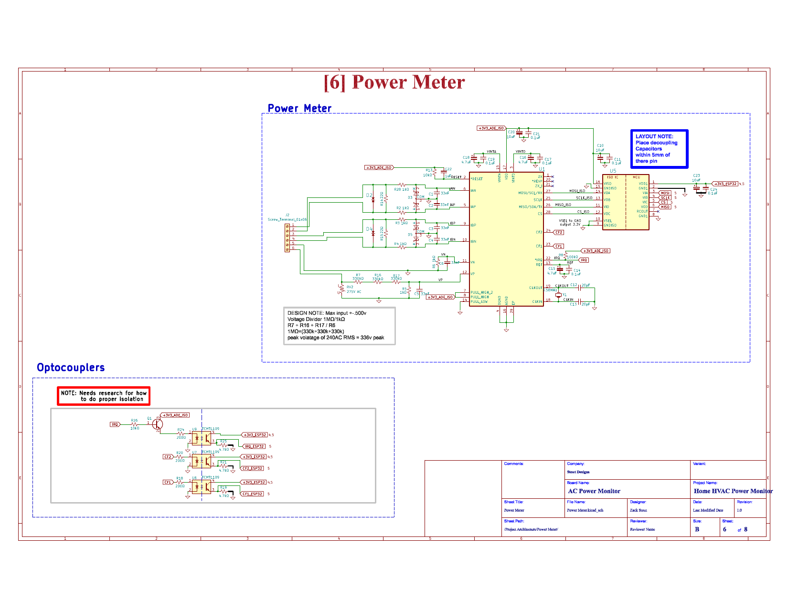

Background
This is a custom energy monitor that installs inside the outdoor condenser unit of a residential 240 VAC split-phase HVAC system, measuring the compressor and the condenser fan motor as two independent channels and reporting to Home Assistant over WiFi. The goal isn't just a power reading — it's a diagnostic tool. Trending inrush current, run current, and power factor over a full cooling season is a way to catch bearing wear, capacitor drift, and refrigerant charge problems while they're still cheap to fix, instead of finding out when the unit fails on the hottest day of the year.
It's a monitoring device only — no control authority over the contactor or thermostat, and LAN-only, with no internet exposure. The attic blower motor is explicitly out of scope for this revision; one subsystem gets fully closed out before the next one is touched.
System Architecture
The block diagram below is straight from the design files: 240 VAC comes in from the condenser circuit and splits three ways — into the current transformers, into the voltage-sensing divider, and into an isolated AC-DC supply. The metering IC handles current, voltage, and power calculations in hardware and hands the result to the ESP32 over SPI, which runs ESPHome and reports everything to Home Assistant over WiFi.

Measurement Approach
Current is sensed with two split-core current transformers clamped around the compressor and fan conductors, each feeding a burden resistor and a matched anti-alias filter into a differential input pair on an Analog Devices ADE7953 metering IC. Voltage is sensed deliberately on the load side of the contactor rather than at the supply — that way the board sees the voltage actually delivered to the compressor, including any sag during inrush or drop across aging contactor contacts, both of which are useful diagnostic signals in their own right.
| Channel | Typical load | PGA gain | Notes |
|---|---|---|---|
| Compressor | ~17 A run | 1 | Doesn't clip until ~32 A RMS — preserves visibility into the inrush envelope, which matters for degradation trending |
| Fan | ~2 A run | 8 | Gain 16 would put the signal at 99.5% of full scale and risk clipping; gain 8 keeps 0.1 A resolution trivial for this ADC |
Calibration is handled entirely in firmware through the ADE7953's gain registers rather than with a trim potentiometer. A physical trimmer was considered and rejected early — it adds wiper contact resistance and a mechanical failure mode that degrades under the vibration and thermal cycling of an outdoor condenser cabinet, for a capability the registers already provide for free.
Isolation and Grounding
The board has two galvanically separate ground domains: a mains-referenced metering side carrying the ADE7953 and current transformers, and an isolated SELV logic side carrying the ESP32 and microSD card. The two communicate across the barrier through a digital isolator (SPI) and three optocouplers (the energy pulse outputs and the interrupt line).
One design decision worth recording because it changed partway through: the voltage sensing topology. The original design used a differential divider, which was the correct choice at the time because the metering ground was still isolated from the mains and there was no valid single-ended reference. Once the metering ground was deliberately bonded to the second supply leg, a single-ended measurement became not just acceptable but the simpler correct choice. Neither decision was wrong — they were correct for two different topologies, and the design changed when the topology did.
Layout and Spacing Compliance
High-voltage spacing follows IPC-2221C, which calls for 2.5 mm minimum clearance for uncoated conductors at this voltage; the target for this board was 3–4 mm for margin, given it lives outdoors and condensation is a real risk. The isolation barrier itself checks out well — probing the layout with a stricter 10 mm rule than required turned up zero violations, meaning the actual copper-to-copper gap across the barrier is at least 10 mm everywhere except at the isolator packages themselves, which are governed by their own datasheet creepage figures.

The domain separation is visible directly in the layout above: the mains pours and the wide traces feeding the power supply module stay in their own region, the metering front end with the two current-transformer channels occupies the lower section, and the logic side around the ESP32 sits well clear of both. The trace widths tell the same story — the heavy mains routing is sized for current and clearance, while the isolated SPI runs crossing to the metering IC are ordinary signal traces.
Two spacings inside the mains domain itself came in under target — both around 2 mm against a 2.5–4 mm goal. Neither is a safety-barrier failure; they're functional mains-side spacings that need either a small layout nudge or a firm commitment to the conformal coating that was already planned for outdoor use, which brings them into compliance either way.
What the Design Review Found
A full ERC/DRC pass together with manual circuit tracing and datasheet cross-checks turned up several real issues before this went anywhere near a fabrication order — exactly the kind of thing a pre-fab review is for.
Bus contention on MISO
The digital isolator's return-channel output is push-pull and never tristates, but it shares the MISO line with the SD card's data line. Every SD card read was going to fight the isolator for control of the bus. Fix: a series resistor plus pull-up to break the contention, with a clean tristate buffer as the more elegant alternative.
An interrupt line that could never assert
The interrupt output is open-drain, and its only pull-up was a single 10 kΩ resistor — giving roughly 0.2 mA through the optocoupler LED, far below what it needs to reliably turn on. The ESP32 would simply never have seen interrupt edges. The fix inverts the drive so the metering IC sinks current instead of sourcing it, which both fixes the current level and means the LED only draws power when an interrupt is actually asserted.
A pull-up that blocked the bootloader
One of the ESP32's strapping pins had a pull-up resistor on it that actively prevented UART download mode — meaning the board as designed couldn't be flashed at all through its own programming header. An easy fix once found, but exactly the kind of issue that's invisible until you actually try to program the board.
Open question: clamp diodes on the current inputs
This one's still unresolved, and it's a genuinely interesting tradeoff rather than a simple bug. Small Schottky diodes were placed across the ADE7953's current inputs as extra protection. The concern isn't that they clamp — it's where they start to. A Schottky's forward knee is soft and begins conducting at 150–250 mV, and that threshold has a negative temperature coefficient, meaning it drops further as the board heats up. Inside an outdoor condenser cabinet in summer, junction temperatures around 85°C are realistic, which pushes the clamp onset down into roughly the same range as the compressor channel's actual peak signal at full load.
That means at exactly the operating point that matters most — high load, high ambient temperature — the clamps could start conducting nonlinearly during completely normal operation, not just during a fault. Existing protection without them (a TVS diode at the connector, series resistors, and the metering IC's own internal ESD structures) is already solid, and it matches what the manufacturer's own reference designs do. The two options on the table are removing the clamps entirely, or substituting silicon diodes whose forward knee sits safely clear of the signal. Both are defensible; neither has been committed to yet.
Firmware and Integration Plan
Firmware work starts after fabrication and bring-up, using ESPHome to expose the metering IC's readings as native Home Assistant sensors. Calibration happens against a reference clamp meter using the chip's ratiometric gain registers, per channel. Local logging to a microSD card preserves high-rate data through WiFi dropouts, at higher resolution than Home Assistant's own history retains — useful for actually catching short transient events like contactor chatter.
One alternative platform got seriously considered and rejected: a Raspberry Pi in place of the ESP32. It has no analog front end of its own, so the entire metering IC, current transformer, and isolation-barrier hardware would still be required regardless — it would have been the same board with a different brain, not a simpler one, and with a worse temperature story for an outdoor cabinet.
Current Status
The board is functionally complete and has passed a full electrical and design-rule check, including custom isolation-spacing rules. Two decisions remain genuinely open — the clamp-diode question above, and confirming the exact replacement part for a surge-protection component before ordering — plus a final verification pass to confirm the review's fixes actually made it back into the schematic files. After that, one more schematic session and a short layout pass stand between this board and a fabrication order.
Key Design Principles
- Calibrate in registers, not hardware — a trim potentiometer adds a mechanical failure mode for a capability the chip already provides
- Match the measurement topology to the grounding topology; a design that was correct under one grounding scheme can become the wrong choice once that scheme changes
- Protection components can degrade the thing they protect — a clamp whose threshold can drift into the normal signal range under real operating temperatures is a liability, not a safety margin
- Phase matching between voltage and current channels is a first-class requirement for power measurement, not a filtering detail
- Design for the actual operating environment — 85°C junction temperatures, condensation, and vibration are the real conditions inside an outdoor condenser cabinet, not the bench
- Scope discipline: close out one subsystem fully before starting the next
Key Components
| Part | Function |
|---|---|
| ADE7953 | Dual-channel energy metering IC |
| ESP32-WROOM-32UE | Host MCU, external antenna for enclosure-mounted RF |
| ADuM5401 | 4-channel digital isolator with isolated power |
| TCMT1109 ×3 | Optocoupler isolation for energy pulse and interrupt outputs |
| SCT-013-000 ×2 | Split-core current transformers, 100 A : 50 mA |
Schematic Set
The full schematic set, straight from the design files, for anyone who wants to see the actual circuits rather than a description of them. A few of the sheets still carry the working design notes and open questions from the process — left in deliberately, since that's a more honest picture of where the design actually stands than a cleaned-up version would be.
Cover Sheet

Project Architecture

System Power Supply

MCU

Power Meter
